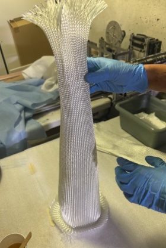
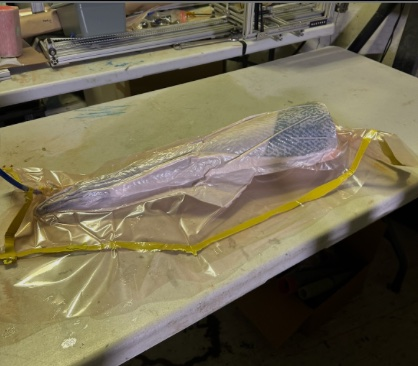
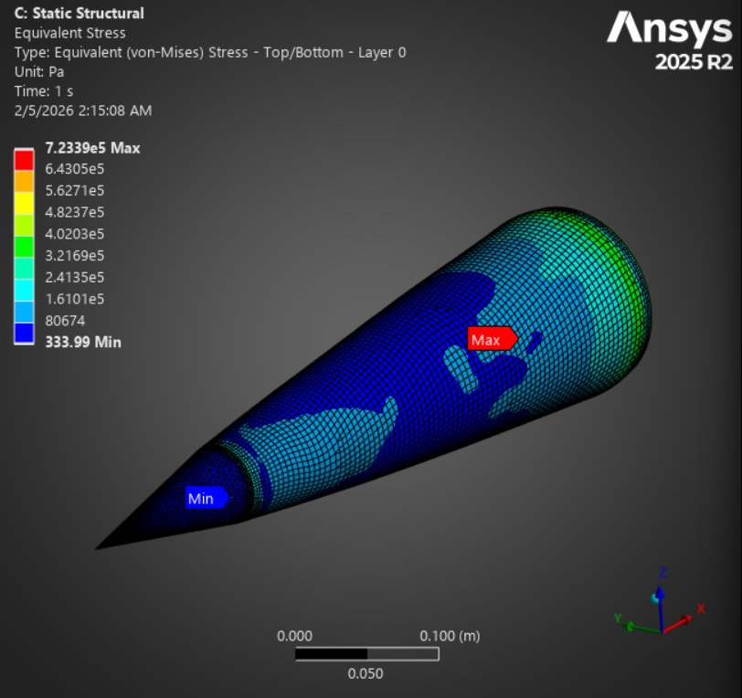
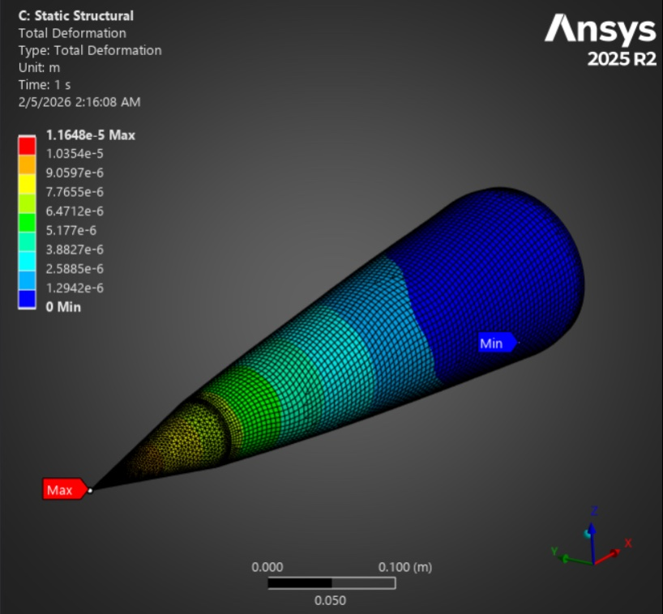
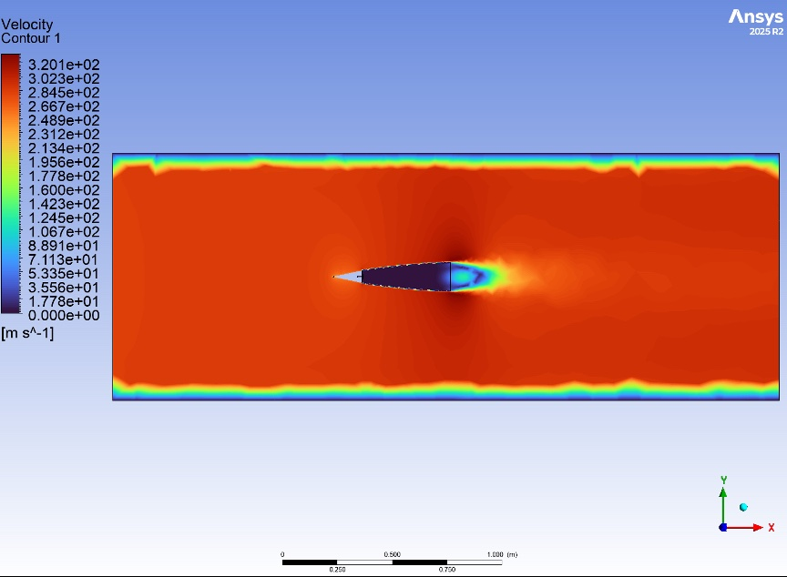
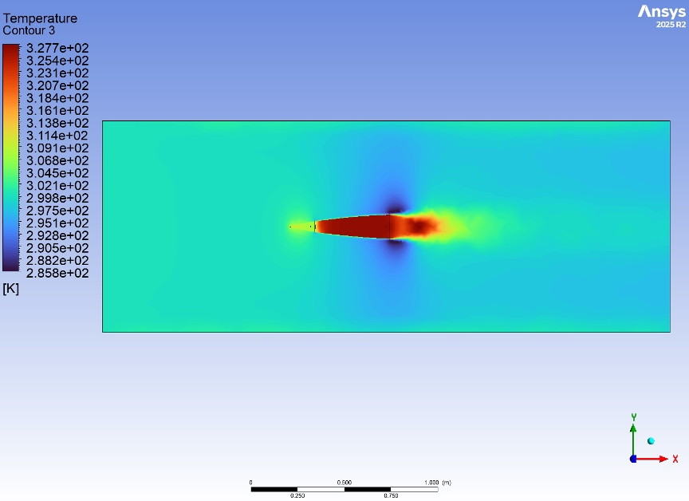
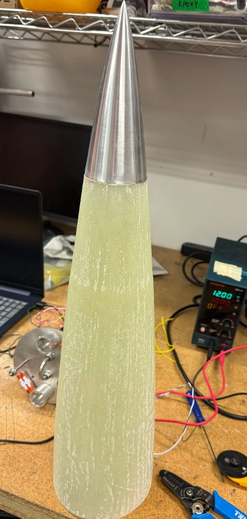

04 — Rocketry · Composites · NUStars
Design and in-house manufacture of a fiberglass composite airframe and Von Karman nose cone for a transonic NASA Student Launch rocket — developed through six vacuum-bagged layup iterations and validated with ANSYS FEA and Fluent CFD.
Objective
The NUStars rocket carries onboard electronics that depend on continuous radio communication with ground stations. Carbon fiber — the structurally obvious choice — was eliminated early because it blocks RF signals. Fiberglass provides adequate structural performance while remaining fully radio-transparent, making it the correct material for this application despite being mechanically inferior to CFRP.
The Von Karman nose cone geometry was selected for its favorable transonic drag characteristics. The project focused on developing a reliable, repeatable vacuum-bagged layup process for both the cylindrical airframe tube and the Von Karman cone — achieving that repeatability required six build iterations.
Manufacturing Process
Material: Biaxial woven E-glass sleeves provide balanced in-plane stiffness. Aeropoxy was selected as the matrix for its aerospace-grade mechanical properties and extended working time — critical for quality layup at this scale.
Mandrel: A hybrid PLA structural core with a PVA sacrificial outer shell allowed the nose cone geometry to be 3D-printed, used as a layup mandrel, then dissolved in water — eliminating the demolding failures of earlier iterations. Each test changed exactly one variable, making failure analysis tractable.

Biaxial fiberglass sleeves being wetted with Aeropoxy over the PLA/PVA mandrel

Final vacuum bag setup — layup → peel ply → perforated film → breather → sealed bag
| Test | Setup | Outcome | Key Lesson |
|---|---|---|---|
| 1 | No vacuum, packing tape release | Collapsed tube | Vacuum and rigid mandrel are both essential |
| 2 | Vacuum bagging, food wrap release | Successful tube, surface artifacts | Food wrap works but leaves texture |
| 3 | Subscale nose cone, no vacuum | Mandrel removal failure | Mold release on mandrel surface required |
| 4 | Peel ply + breather, spray release | Failed removal, distorted shape | Perforated film needed between peel ply and breather |
| 5 | Improved vacuum, bag sheet release | Leathery cure | Without perforated film, breather absorbs too much resin |
| 6 (Final) | Perforated film added, PLA/PVA mandrel | Validated process | Correct stack: layup → peel ply → perforated film → breather → bag |
Structural Analysis
ANSYS Static Structural applied aerodynamic pressure loading to the nose cone geometry. Von Mises stress peaks near the base of the cone — where aerodynamic moment arm and wall curvature both contribute — reaching a maximum of 7.23 × 10⁵ Pa. Total deformation is minimal: 1.16 × 10⁻⁵ m maximum at the tip. Both values confirm structural adequacy with significant margin.


Von Mises stress — max 7.23 × 10⁵ Pa at nose cone base (left) · Total deformation — max 1.16 × 10⁻⁵ m at tip (right)
Aerodynamic Analysis
ANSYS Fluent CFD at transonic conditions confirmed smooth flow attachment along the Von Karman body — minimizing wave drag through the critical Mach regime. The temperature contour identifies aerodynamic heating concentrated at the stagnation point, confirming that the aluminum nose tip handles the highest thermal load while the fiberglass body remains within acceptable temperature bounds.


Velocity magnitude (m/s) — smooth flow attachment along nose body (left) · Temperature contour (K) — stagnation heating concentrated at aluminum tip (right)
Final Result
The validated manufacturing process produced a flight-ready fiberglass nose cone with aluminum tip, integrated with the cylindrical airframe tube and coupler assembly. The final article flew at the NASA Student Launch competition in Huntsville, AL.

Final fiberglass composite nose cone with machined aluminum tip — flight configuration
Reflection
Six iterations to land on a reliable process: layup → peel ply → perforated film → breather → bag. Each failure was informative — but only because each test changed exactly one variable. Systematic isolation is what made the failures useful rather than just frustrating.
The decision to use fiberglass over carbon fiber, while initially a constraint, was the right call — preserving radio transparency for avionics while reducing cost and enabling in-house manufacturing. Material selection that optimizes for all system requirements, not just structural performance, is a design skill in itself.
Manufacturing constraints drove design decisions more than structural requirements did. The mandrel design, vacuum stack configuration, and epoxy working time shaped every aspect of the final process — which is how it works in practice, and why manufacturing knowledge matters as much as structural analysis knowledge.